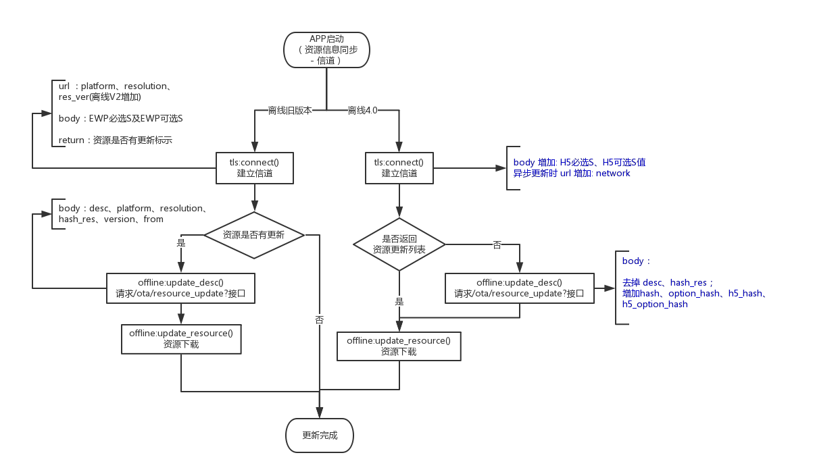
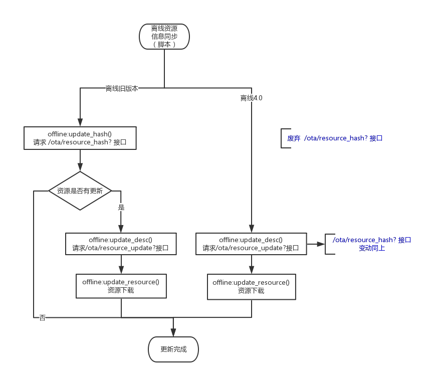
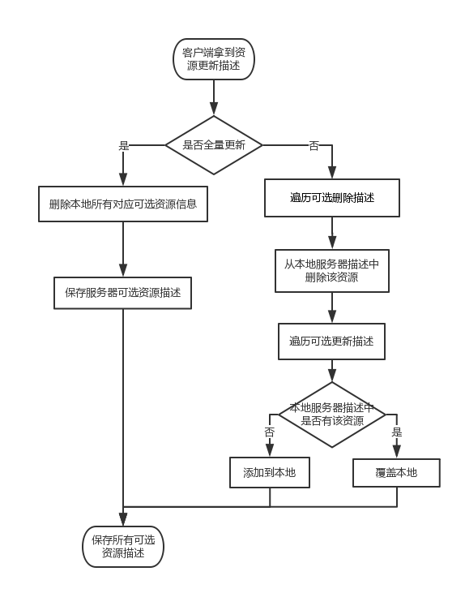
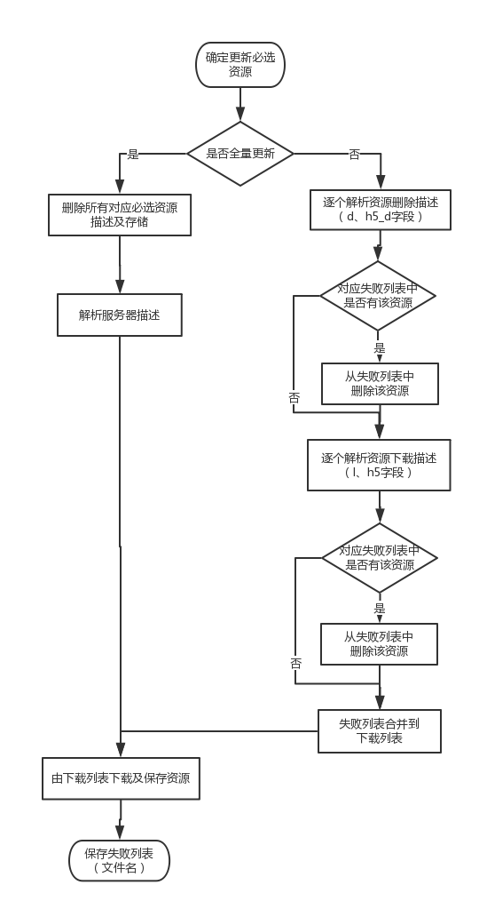
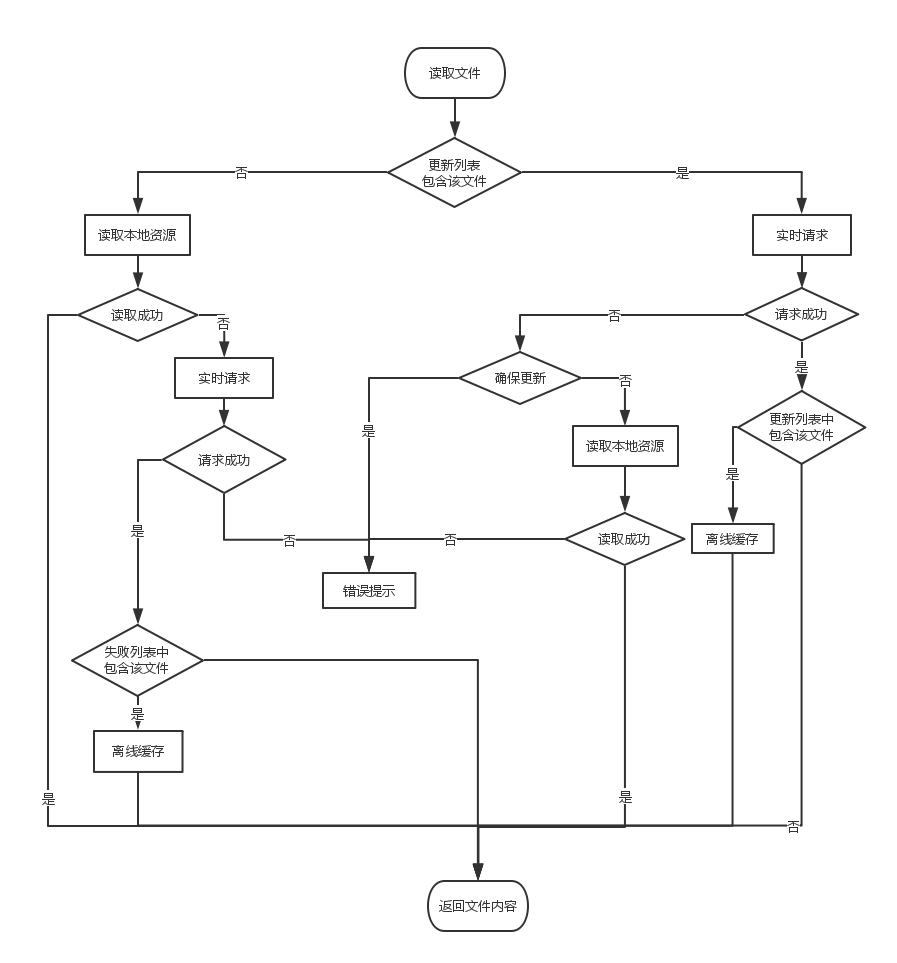

- Introduction
- 1. 代码提交
- 2. 编码规范
- 3. 代码评审
- 4. 持续集成
- 5. 代码服务器
- 6. 技术期刊
- 7. 需求文档
-
8.
设计文档
- 8.1. 文件上传
- 8.2. 离线资源
- 8.3. 可靠消息
- 8.4. Editor调试工具
- 8.5. EMP设计
- 8.6. EWP设计
- 9. 测试文档
- 10. 客户端其他功能
- 11. 技术积累
- Published using GitBook
离线资源优化 - 客户端设计
1 需求
2 流程变更概览
经信道资源同步方式：

脚本同步方式：

3 信息同步优化
3.1 lua 接口变更
3.1.1 tls:connect(callback, options，optionOfflineSyncMode)
Description:
建立加密信道Syntax:
tls:connect(callback, options) tls:connect(callback, optionOfflineSyncMode) tls:connect(callback, options, optionOfflineSyncMode)Parameters:
- callback(required)
- 说明：加密信道建立结束的回调方法。
- 参数：Table 类型
- {content:"握手后返回的页面数据"，containDesc = "0：服务器没有返回更新列表；1：服务器已返回更新列表；只有异步更新时才有此字段"，mustUpdate = "服务器返回的m字段，其他情况则为 -2" }
- options(optional)
- 说明：建立信道时添加到url中上传的参数
- optionOfflineSyncMode(optional)
- 类型：number
- 说明：建立信道时离线资源同步模式。0：脚本控制（默认为脚本控制）；1：信道同步；2：信道异步
- callback(required)
Return:
无Examples:
local mOfflineSyncMode = 2; -- 离线异步方式 -- 信道回调 function tlsCallback(returnContent) mPageContent = returnContent["content"]; -- 页面报文 if mOfflineSyncMode == 1 then -- 同步 local mustUpdate = returnContent["mustUpdate"]; offlineSyncUpdate(mustUpdate); elseif mOfflineSyncMode == 2 then replace(); -- 先做页面替换 local containDesc = returnContent["containDesc"]; if containDesc == 0 then -- 服务器没有返回资源描述 offline:update_desc(offlineAsyncUpdate); elseif containDesc == 1 then -- 服务器已返回资源描述 local mustUpdate = returnContent["mustUpdate"]; offlineAsyncUpdate(mustUpdate); end elseif mOfflineSyncMode == 0 then -- 脚本控制 replace(); offline:update_desc(offlineAsyncUpdate); end end tls:connect(tlsCallback, mOfflineSyncMode);
3.1.2 offline:update_hash() 接口
废弃 @Since 离线4.0
客户端不需要做兼容，默认返回值: 3(必选,可选资源描述都需要更新)
3.1.3 system:getInfo(name)
- Description:
获取手机特定信息 Parameters:
name(required) 类型：String
- 说明：增加
"network"，为获取当前设备的网络状态
- 说明：增加
Return:
类型：String 2G、3G、4G、WIFI、UNKNOWN、 nil（没有网络时）Examples:
local networkStr = system:getInfo("network"); if networkStr != nil then window:alert("当前网络状态为："..networkStr); else window:alert("设备当前没有网络"); end
3.2 信道变更
- 请求url 增加
network标示设备当前网络环境（只有异步更新时才上传该参数） - 请求body 增加
H5必选S值类型：0x0F、H5可选S值类型：0x10。S值为空时不上传 - 变更后url长度约为102字符
- 信道建立成功，客户端根据服务器返回离线描述中的
cd字段判断是否包含更新描述，1：包含；0：不包含；为0时没有该字段 - 若为异步更新tls:connect() 的回调方法参数中增加 key :
containDesc表示服务器是否返回了更新列表 0 ： 没有返回； 1：已返回;mustUpdate表示服务器返回的m字段。 - 若离线为脚本控制方式，则建立信道时客户端不上传离线资源的相关信息(url 不上传
platform、resolution、res_ver、network参数; body 不上传 离线对应S 值)
3.3 接口变更
offline:update_desc() 及对应的 /ota/resource_update? 接口
- 请求body： 去掉：desc、hash_res； 增加：
hash(EWP必选S值) 、option_hash(EWP可选S值)、h5_hash(H5必选S值)、h5_option_hash(H5可选S值)。 - S值为空时则上传
""
3.4 封装离线更新脚本
产品提供默认的离线资源同步及异步更新的脚本。
脚本文件（EMPTemplate.lua）
-- 建立库类结构 APP = {}; -- 构造函数，返回一个APP对象 function APP:new(o) o = o or {}; -- create table if users does not provide one setmetatable(o, self); self.__index = self; return o; end local mPageContent; -- 建立信道返回的页面内容 local mOfflineSyncMode ; -- 离线同步模式 0:脚本控制 1: 同步 ; 2: 异步 local mAppOfflineCallBack; local mAppOfflineFinishedCallback; -- app 自定义结束回调方法 local mOfflineCallBack; -- 进入信道返回的页面 function replace() location:replace(mPageContent); end -- 离线资源更新完成的回调方法 function offlineFinishedCallback(failtable) mAppOfflineFinishedCallback(failtable); -- 调用app自定义的方法 replace(); end -- 异步更新弹出[确定][取消] function alertCallback_Async(btnIndex) if btnIndex == 0 then -- 用户点击[确定]按钮 offline:update_resource(mAppOfflineCallBack); end end -- 同步更新弹出[确定][取消] function alertCallback_Sync(btnIndex) if btnIndex == 0 then -- 用户点击[确定]按钮 offline:update_resource(mOfflineCallBack); else replace(); end end -- 离线资源异步更新 function offlineAsyncUpdate(mustUpdate) if mustUpdate == 0 then window:alert("您有新的离线资源需要下载，是否更新？", "确定","取消", alertCallback_Async); elseif mustUpdate == 1 then offline:update_resource(mAppOfflineCallBack); window:alert("正在更新离线资源!", "确定"); elseif mustUpdate == -1 then window:alert("最新离线资源", "确定"); end end -- 离线资源同步更新 function offlineSyncUpdate(mustUpdate) if mustUpdate == 0 then window:alert("您有新的离线资源需要下载，是否更新？", "确定","取消", alertCallback_Sync); elseif mustUpdate == 1 then offline:update_resource(mOfflineCallBack); window:alert("正在更新离线资源!", "确定"); elseif mustUpdate == -1 then replace(); window:alert("最新离线资源", "确定"); else window:alert("服务器返回错误信息!", "确定"); replace(); end end -- 信道回调 function tlsCallback(returnContent) mPageContent = returnContent["content"]; -- 页面报文 if mOfflineSyncMode == 1 then -- 同步 local mustUpdate = returnContent["mustUpdate"]; offlineSyncUpdate(mustUpdate); elseif mOfflineSyncMode == 2 then replace(); -- 先做页面替换 local containDesc = returnContent["containDesc"]; if containDesc == 0 then -- 服务器没有返回资源描述 offline:update_desc(offlineAsyncUpdate); elseif containDesc == 1 then -- 服务器已返回资源描述 local mustUpdate = returnContent["mustUpdate"]; offlineAsyncUpdate(mustUpdate); end elseif mOfflineSyncMode == 0 then -- 脚本控制 replace(); offline:update_desc(offlineAsyncUpdate); end end function APP:init(processCallback, finishedCallback, offlineSyncMode) mOfflineSyncMode = offlineSyncMode; mAppOfflineCallBack = {processCallback = processCallback, finishedCallback = finishedCallback}; mOfflineCallBack = {processCallback = processCallback, finishedCallback = offlineFinishedCallback}; mAppOfflineFinishedCallback = finishedCallback; local offlineVersion = offline:version(); -- 获取离线资源版本 tls:connect(tlsCallback, mOfflineSyncMode); end
- main.xml 调用
需要先加载lua脚本文件 <script type="text/x-lua" src="EMPTemplate.lua"></script>
异步方式更新代码示例如下：
local offlineSyncMode = 2; -- 0：脚本控制 1：信道同步 2：信道异步
-- 下载进度回掉：
function processCallback(downNum, totalNum)
if bgCtrl[1]:getPropertyByName("hide") == "true" then
bgCtrl[1]:setPropertyByName("hide", "false");
end
local persent = math.floor(downNum * 100 / totalNum);
local pers = persent * 2
if bgCtrl and #bgCtrl > 0 then
foreignCtrl[1]:setStyleByName("width", pers);
fontCtrl[1]:setPropertyByName("text", persent.."%");
end;
end
-- 下载结束回掉：
function finishedCallback(failtable)
local failPaths = "";
if failtable and #failtable > 0 then
for k1,v1 in pairs(failtable) do
failPaths = failPaths..v1..",";
end;
window:alert("下载失败文件："..failPaths);
else
window:alert("下载完成");
end;
end
app = APP:new{};
--[[
processCallback：下载进度回调；
finishedCallback：下载结束回调；
offlineSyncMode：离线资源同步模式(0：脚本控制；1：同步；2：异步)
]]
app:init(processCallback, finishedCallback, offlineSyncMode);
4 资源更新策略
以下处理策略适用于EWP资源及H5资源
所有可选资源描述更新 -- 客户端拿到服务器返回的资源描述信息时开始执行

必选资源更新 -- 用户[确定]更新必选资源时开始执行

说明：
- 根据服务器返回资源描述信息，判断是否全量更新。
tu字段为1表示全量更新；为0表示非全量（为0时没有该字段） 如果是全量更新
- 必选
- 删除对应本地已存储的所有必选资源信息
- 解析服务器更新描述，获取下载列表
- 更新资源
- 可选
- 删除对应本地已存储的所有可选资源信息
- 保存服务器更新描述
- 必选
如果不是全量更新
- 必选
- 逐个解析d、h5_d字段，判定失败列表中是否有该资源，如果有则从失败列表中删除
- 逐个解析l、h5字段，判定失败列表中是否有该资源，如果有则从失败列表中删除
- 把失败列表中的数据添加到下载列表中
- 更新资源
- 可选资源描述信息
- 遍历需要删除的资源描述信息，从本地服务器描述中删除该资源
- 遍历更新描述，如果本地服务器描述中存在该资源则覆盖；否则添加到本地
- 必选
更新必选资源
- 更新过程结束时(无论所有资源更新成功与否)保存对应必选资源的S 值。
- 更新失败的文件保存到失败列表(文件下载路径及文件名)，更新过程结束时保存失败列表到本地。
- 用户选择更新时，失败列表与更新列表合并；否则不做合并
- 先判断本地是否已有该文件且哈希值一致，若本地已存在则不下载，否则继续下载。
客户端本地保存资源
必选
- 客户端已下载必选资源描述 EWP 资源：client.desc H5 资源：h5.desc
- 更新失败列表 EWP 资源：ewp_failed.desc H5 资源 ：h5_failed.desc
可选
- 客户端已下载可选资源描述 EWP 资源： option.desc H5资源： h5_option.desc
- 服务器所有可选资源描述 EWP 资源 ：option_server.desc H5资源：h5_option_server.desc
5 实时更新
新增实时更新接口
ota/rt_resourceurl：服务器地址 + 接口
body参数如下：
- 当前离线版本 ： version
- 平台：platform
- 分辨率：resolution
- 多appname：from
- 文件名：filename
- 资源类型：filetype
ewp或h5
5.1 资源读取顺序
适用于所有资源读取

说明：
- 实时请求成功缓存离线内容时，对于更新列表的变动需要加同步锁。
- 资源读取场景
- 页面引入的脚本
<script type="text/x-lua" src="RYTL.lua"/> - 页面引入的CSS文件
<style type = "text/css" src="base.css"/> - 页面连接的文件
<link ref="base.css" type="text/css"/> - 控件样式、属性中用到的图片
- img 控件的 src
- file:read()接口
- file:readH5()接口
- webview 访问离线H5资源
- 页面引入的脚本
客户端资源读取接口统一命名：
读取EWP资源接口： public byte[] readResourceFile(String fileName);
public byte[] readResourceFile(String fileName, String appname);
读取H5资源接口： public final byte[] readResFileH5(String fileName) ;
public final byte[] readResFileH5(String filePath, String appName) ;
如果更新列表或失败列表中包含实时请求到的文件，则做离线缓存，否则不做缓存
5.2 脚本更新可选资源
推荐更新、访问流程：

5.2.1 lua 接口变更
5.2.1.1 offline:isEnsUpdateOptional(fileName, optAppName)
- Description:
判断指定文件是否为确保更新的可选资源资源 Parameters:
- fileName(required) 类型：String 可选资源文件名
- optAppName(optional) 类型：String 指定appname，默认当前设定的app
Return:
类型：Boolean true：是确保更新 ； false：不是确保更新（没有该资源时为false）Examples:
local isensureupdate = offline:isEnsUpdateOptional("1.zip","emas")； if isensureupdate then window:alert("确保更新资源"); end
5.2.1.2 offline:cancelUpdateOptional(fileName, optAppName)
- Description:
取消更新该资源 Parameters:
- fileName(required) 类型：String 可选资源插件包名（依.zip结尾）
- optAppName(optional) 类型：String 指定appname，默认当前设定的app
Return:
无Examples:
local fileName = "1.zip"; function alertCallback (btnIndex) if btnIndex == 0 then -- 点击[是] -- 更新可选插件包 elseif btnIndex == 1 then -- 点击[否] offline:cancelUpdateOptional(fileName); -- 设置取消更新该插件包 end end local localEffective = offline:checkOfflineFileWithLocal("1.zip"); local serverEffective = offline:checkOfflineFileWithServer("1.zip"); if localEffective then if serverEffective then -- 可选插件包有更新 window:alert("是否更新资源？","是","否"，alertCallback); end end
5.2.2 可选资源更新列表
- offline:checkOfflineFileWithServer() 被调用 且 返回值为false时，把文件加入更新列表。
- offline:cancelUpdateOptional() 被调用时，从更新列表中删除
6 其他变更
- 系统启动页main.xml 通过上述的资源读取顺序获取
7 流量消耗优化
客户端需要解析服务器描述中的f字段 ，其标示文件大小，单位 m/k/b，且只保留一位小数。
7.1 lua 接口变更
7.1.1 offline:update_desc(callback, options)
Description:
请求resource_update接口，获取离线资源的下载描述并缓存。Parameters:
callback(required)
当资源更新接口请求结束后，调用此函数，返回资源更新的接口信息。
function callback(mustUpdate, resourceSize)
end
- mustUpdate 参数定义保持不变
- resourceSize (required) 类型:number （单位K，最多保留一位小数） 值为所有必选资源的大小
options 参数定义保持不变
Return:
无
Examples:
-- 只有 [确定] 按钮的回调 function confirm_callback (btnIndex) end -- [确定][取消] 的回调 function update_callback (btnIndex) if btnIndex == 0 then -- 用户点击[继续] offline:update_resource(); else -- 用户点击[取消] end end function updateDesc_callback(mustUpdate, resourceSize) local networkStr = system:getInfo("network"); -- 获取当前网络状态 if networkStr != nil then -- 联网状态 if mustUpdate == 0 then local threshold = 1 * 1024 * 1024; -- 1024K 设定阈值 if networkStr != "wifi" && resourceSize >= threshold then -- 非wifi & 文件大小超过限定阈值 window:alert("非WIFI网络下需要更新"..resourceSize.." K文件，是否继续？"，"继续","取消", update_callback); else -- wifi || 文件大小没有超过阈值 window:alert("当前为WIFI网络环境下，需要更新"..resourceSize.." K文件，是否继续？"，"继续","取消", update_callback); end elseif mustUpdate == 1 then offline:update_resource(); window:alert("离线资源正在更新", "确定", confirm_callback); elseif mustUpdate == -1 then -- 客户端当前已是最新资源 end end end offline:update_desc(updateDesc_callback);
7.1.2 offline:getOptIncrUpdateSize(filename, optAppname)
Description:
获取指定可选资源增量更新大小。单位K(保留一位小数)Parameters:
- filename(required) 类型 ： String 可选资源文件名（依.zip结尾）
- optAppname(option) 对应APP名称，类型：String,默认为当前设定的APP
Return:
指定可选资源增量更新大小
类型：numberExamples:
local fileSize = offline:getOptIncrUpdateSize("1.zip","ebank"); -- 获取更新的可选资源1.zip增量更新大小
8 文件读取异常处理
文件读取失败时给出错误提示且不阻止当前页面的加载。
8.1 lua 接口变更
8.1.1 file:setResourceReadFailedListener();
Description:
设置资源读取失败全局监听
Syntax1:
file:setResourceReadFailedListener(optFileSuffixTable, optCallBack);
Parameters:
optFileSuffixTable(option)
- 类型: Table
- 说明: 文件扩展名。 key ： 默认值 value:文件扩展名
optCallBack(option)
Syntax1：optCallBack (pageId, filename)
- 说明：指定类型文件读取失败时的回调方法
- 参数：pageId 当前页面 id； filename 读取失败的文件名
Return:
无Examples:
local mPageId; -- 页面id function windowCallback_back(btnIndex) if btnIndex == 0 then -- 点击[重试] location:reload(); else -- 点击[返回] local lastPageContent = history:get(-1); location:replace(lastPageContent); end end function windowCallback_exit(btnIndex) if btnIndex == 0 then -- 点击[重试] location:reload(); else -- 点击[退出] window:close(); end end function resourceReadFailedCallback (pageId, filename) -- 文件读取失败的回调 -- location:reload() 刷新当前页面 -- 或 提示用户 if mPageId == nil || mPageId != pageId then -- 只在当前页面第一次弹出错误提示时做处理 mPageId = pageId; local pageLength = history:length(); -- 获取页面缓存数量 if pageLength > 1 then window:alert("页面加载异常!","重试","返回",windowCallback_back); else window:alert("页面加载异常!","重试","退出",windowCallback_exit); end end end local extTable = {".lua"}; -- 默认只监听.lua文件 file:setResourceReadFailedListener(extTable, resourceReadFailedCallback);
8.1.2 location:replace()
Description:
展示新页面
Syntax1:
location:replace(content, optCallback, optParamTable)
Parameters:
optCallback(optional)
- 类型: Function
说明: 回调函数。
此回调函数定义时必须有且仅有一个参数，此参数类型为Table。其中加入resultCode[String.]，resultBuf[String.].两个字段resultCode的value的类型为int类型，其值的意义如下:
0 页面加载成功，没有错误。-4 资源读取失败 目前客户端需要支持0（成功）及 -4（资源读取失败）。
resultBuf的返回对应的错误代码的可读性错误提示。方便提示模板开发和使用用户.
- 如果没有错误，resultBuf为空字符串。
- 如果resultCode = -4 ，则为json格式例如：["filename1","filename2"] filename 为读取失败的文件名
Return:
无Examples:
local content = "<?xml version= ……"; function replaceCallback(resultTable) if resultTable.resultCode == 0 then –- 页面加载成功 else --错误处理 if resultTable.resultCode == -4 then -- 资源加载失败处理 local filenameJson = result.resultBuf; -- 此处可刷新当前页面或给出提示信息
end
end;
end;
location:replace(content, replaceCallback, {})；
8.1.3 window:showContent()
Description:
在当前页面上层再悬浮显示另一个页面，此页面为模态页面.接受完整页面报文.Syntax1:
window:showContent(content/path, tag, optionTable)
Parameters:
- content/path
- tag
optionTable(optional)
- 类型: Table
- 参数：增加key
callback(showContent执行结束的回调方法 ) 说明: 此回调函数定义时必须有且仅有一个参数，此参数类型为Table。其中加入resultCode[String.]，resultBuf[String.].两个字段
resultCode的value的类型为int类型，其值的意义如下:
0 页面加载成功，没有错误。-4 资源读取失败 目前客户端需要支持0（成功）及 -4（资源读取失败）。
resultBuf的返回对应的错误代码的可读性错误提示。方便提示模板开发和使用用户.
- 如果没有错误，resultBuf为空字符串。
- 如果resultCode = -4 ，则为json格式例如：["filename1","filename2"] filename 为读取失败的文件名
Return:
无Examples:
local content = "<?xml version=...><content>...<content>"; local tag = 1; function callback (resultTable) if resultTable.resultCode == 0 then –- 页面加载成功 else --错误处理 if resultTable.resultCode == -4 then -- 资源加载失败处理 local filenameJson = result.resultBuf; -- 此处可刷新当前页面或给出提示信息
end
end;
end
local optionTable = {callback = callback};
window:showContent(content, tag, optionTable);
8.1.4 setInnerHTML
Description:
更新当前控件内容.
Syntax:
control:setInnerHTML(content, optionTable)
Parameters:
- content(required)
- 类型: String.
- 说明: 报文内容
optionTable(optional)
- 类型: Table
参数：key
callback(setInnerHTML执行结束时的回调方法)* 此回调函数定义时必须有且仅有一个参数，此参数类型为Table。其中加入resultCode[String.]，resultBuf[String.].两个字段resultCode的value的类型为int类型，其值的意义如下:
0 页面加载成功，没有错误。-4 资源读取失败 目前客户端需要支持0（成功）及 -4（资源读取失败）。
resultBuf的返回对应的错误代码的可读性错误提示。方便提示模板开发和使用用户.
- 如果没有错误，resultBuf为空字符串。
- 如果resultCode = -4 ，则为json格式例如：["filename1","filename2"] filename 为读取失败的文件名
- content(required)
Return: 无
Examples:
function callback (resultTable) if resultTable.resultCode == 0 then –- 页面加载成功 else --错误处理 if resultTable.resultCode == -4 then -- 资源加载失败处理 local filenameJson = result.resultBuf; -- 此处可刷新当前页面或给出提示信息
end
end;
end
local content = "<content><style>...</style><script>...</script><div>...</div></content>";
local optionTable = {callback = callback}
control:setInnerHTML(content, optionTable);
8.2 默认处理
- 客户端脚本方式提供默认处理
- 系统启动时执行file:setResourceReadFailedListener(extTable, resourceReadFailedCallback);方法
- 客户端需要生成 file:setResourceReadFailedListener(); 回调方法的pageId
8.3 资源描述格式变更
服务器返回资源描述变更说明：
- 新增字段
tu(是否全量更新) 、f(文件大小)、cd(信道是否返回了资源更新描述) - 可选
- 单个资源新增
u（是否确保更新）字段 - 增加
od和h5_od字段标示 客户端需要从描述中删除的资源
- 单个资源新增
- 服务器返回资源描述中增加了
st字段(原来是在offline:update_hash() 接口返回)
预置资源描述变更说明：
- 可选单个文件增加
f字段，标示文件大小
9 测试
9.1 lua 接口变更
9.1.1 offline:getResourceVersion(type，appname)
Description:
获取指定资源版本，包括EWP必选、EWP可选、H5必选、H5可选Parameters:
type(required) 类型 ： number
- 1 ：EWP必选
- 2：EWP可选
- 3：H5必选
- 4：H5可选
appname(option) 类型 ： String
- 说明：对应APP，为空则获取当前设定APP 对应资源版本
Return:
类型：String
指定type、appname的资源版本号（即S值）,为空返回nilExamples:
local lversion = offline:getResourceVersion(0); -- 获取必选资源的版本号
10 补充文档
| Date | Note | Modifier |
|---|---|---|
| 2015-12-25 | 离线资源优化 - 客户端设计 方案初稿 | liu.dongmei |
| 2015-12-30 | 离线资源优化 - 客户端设计 增加优化流程变更说明、修改资源读取顺序及客户端更新策略等 | liu.dongmei |
| 2016-01-13 | 离线资源优化 - 客户端设计 客户端更新策略 - 添加必选、可选更新时机说明 | liu.dongmei |
| 2016-02-18 | 离线资源优化 - 客户端设计 添加失败列表更新方式说明 & 避免必选资源的重复下载 | liu.dongmei |
| 2016-03-24 | 离线资源优化 - 客户端设计 根据已实现结果，完善设计内容 | liu.dongmei |